Sketch web lúdico desarrollado como el tercer trabajo práctico para la asignatura Informática Aplicada 1 – Cátedra Bedoian, en el marco de la Tecnicatura en Artes Multimediales (UNA). Orientado al diseño y desarrollo de un minijuego que representa la capacidad tecnológica humana actual para poder explorar el universo cómo así también su limitación física al encontrarse con el mismo, donde el personaje principal está dado por un astronauta/rover que debe evitar quedarse sin oxígeno/energía cómo así también ser alcanzado por un meteorito, paralelamente una mira teslescópica permite desviar los meteoritos que impactan contra la plataforma, la cual posee una identificación cromática por celdas diferenciadas aleatoriamente. Para poder jugarlo es necesario el uso de teclado y mouse.

Girál el celular a horizontal para jugar
Sketch web lúdico desarrollado como el tercer trabajo práctico para la asignatura Informática Aplicada 1 – Cátedra Bedoian, en el marco de la Tecnicatura en Artes Multimediales (UNA). Orientado al diseño y desarrollo de un minijuego que representa la capacidad tecnológica humana actual para poder explorar el universo cómo así también su limitación física al encontrarse con el mismo, donde el personaje principal está dado por un astronauta/rover que debe evitar quedarse sin oxígeno/energía cómo así también ser alcanzado por un meteorito, paralelamente una mira teslescópica permite desviar los meteoritos que impactan contra la plataforma, la cual posee una identificación cromática por celdas diferenciadas aleatoriamente. Para poder jugarlo es necesario el uso de teclado y mouse.